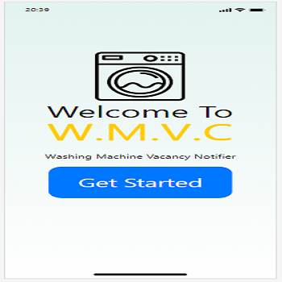

Problem Statement: Washing Machines

People who use public washing and laundry machines never know if or when a unit will be open. This leads to frustration from many people who go all the way to these units, not knowing that they wouldn't be able to use them. Our goal is to create a solution to this problem and have a way for people to know whether a washing or laundry machine unit is open before they go to them.
Affinity Diagram: Washing Machines

My group and I brainstormed ideas for washing machines.
Personas: Washing Machines

Persona of a typical washingmachine app user.
Storyboard: Washing Machines

Storyboard of a typical washingmachine app user.
Sketches: Washing Machines

Sketches of a washingmachine app.
Paper Prototype: Washing Machines

Prototype of a washingmachine app.
Prototype: Washing Machines
Prototype of a washingmachine app.